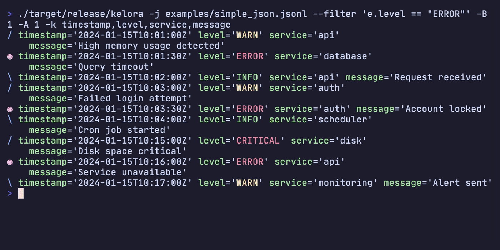
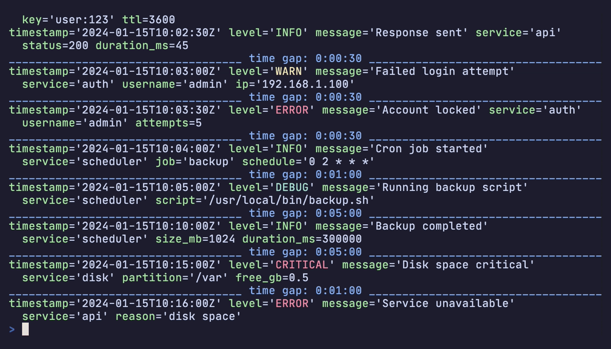

CLI Reference¶
Complete command-line interface reference for Kelora. For quick start examples, see the Quickstart Guide.
Synopsis¶
Processing Modes¶
Kelora supports two processing modes:
| Mode | When to Use | Characteristics |
|---|---|---|
| Sequential (default) | Streaming, interactive, ordered output | Events processed one at a time in order |
Parallel (--parallel) |
High-throughput batch processing | Events processed in parallel batches across cores |
Common Examples¶
# Find errors in access logs
kelora access.log --levels error,critical
# Transform JSON logs with Rhai
kelora -j app.json --exec 'e.duration_ms = e.end_time - e.start_time'
# Extract specific fields from NGINX logs
kelora nginx.log -f combined --keys method,status,path
Arguments¶
Files¶
Input files to process. If omitted, reads from stdin. Use - to explicitly specify stdin.
Examples:
kelora app.log # Single file
kelora logs/*.jsonl # Multiple files with glob
kelora file1.log file2.log # Multiple files explicit
tail -f app.log | kelora -j # From stdin
kelora - # Explicitly read stdin
Global Options¶
Help and Version¶
| Flag | Description |
|---|---|
-h, --help |
Print complete help (use -h for summary) |
--help [KEYWORD] |
Search the full CLI reference; pass a flag (--help -j, --help --since) for a precise whole-token match, or a bare word (--help time) for a substring search |
-V, --version |
Print version information |
Help Topics¶
| Flag | Description |
|---|---|
--help-rhai |
Rhai scripting guide and stage semantics |
--help-functions [KEYWORD] |
All 150+ built-in Rhai functions; add a KEYWORD to filter by name/description (e.g. --help-functions ip) |
--help-examples |
Practical log analysis patterns |
--help-time |
Timestamp format reference (chrono format strings) |
--help-multiline |
Multi-line event detection strategies |
--completions <SHELL> |
Generate shell completion script (bash, zsh, fish, powershell, elvish) |
Shell Completions¶
--completions <SHELL>¶
Generate shell completion script for tab-completion of flags and options.
Supported shells: bash, zsh, fish, powershell, elvish
Installation:
# Bash
mkdir -p ~/.local/share/bash-completion/completions
kelora --completions bash > ~/.local/share/bash-completion/completions/kelora
# Zsh
mkdir -p ~/.zfunc
kelora --completions zsh > ~/.zfunc/_kelora
# Add ~/.zfunc to fpath in ~/.zshrc, then run: autoload -Uz compinit && compinit
# Fish
mkdir -p ~/.config/fish/completions
kelora --completions fish > ~/.config/fish/completions/kelora.fish
# PowerShell (add to $PROFILE)
kelora --completions powershell >> $PROFILE
After installation, restart your shell or reload its completion configuration. Tab completion will work for all flags and enum values (formats, shells, etc.).
Input Options¶
Format Selection¶
-f, --input-format <FORMAT>¶
Specify input format. Supports standard formats, column parsing, and CSV with type annotations.
Standard Formats:
auto- Auto-detect format from the first non-empty line (default)auto-per-file- Auto-detect once per file; useful when different files use different formatsjson- JSON lines (one JSON object per line)line- Plain text (one line per event)csv- CSV with header rowtsv- Tab-separated values with headerlogfmt- Key-value pairs (logfmt format)syslog- Syslog RFC5424 and RFC3164combined- Apache/Nginx log formats (Common + Combined)cef- ArcSight Common Event Format
Column Parsing:
CSV with Types:
Cascade mode (mixed-format streams):
Comma-separated list of simple formats tried in order; first success wins.
Adds an _format field to each event with the winning parser name. Allowed:
json, line, raw, logfmt, syslog, cef, combined. Schema-based
formats (csv/tsv, cols:, regex:) and auto are not allowed inside
the cascade list. See Format Reference for full
details.
Examples:
kelora -f json app.log
kelora -f auto-per-file -J logs/*.log # detect each file independently
kelora -f combined nginx.log
kelora -f json,line noisy.log # cascade: JSON with text fallback
kelora -f 'cols:ts(2) level *msg' custom.log # `ts` is auto-detected as a timestamp
-j¶
Shortcut for -f json. Only affects input parsing. For JSON output, use -J or -F json.
File Processing¶
--file-order <FILE_ORDER>¶
Control file processing order.
Values:
cli- Process files in command-line order (default)name- Sort files alphabetically by namemtime- Sort files by modification time (oldest first)
--merge-sorted¶
Merge multiple already-sorted input files into one chronological stream.
Kelora does this as a streaming k-way merge: it keeps one pending event per input file and emits the earliest timestamp currently visible. This is fast and memory-bounded, but it is not a full global sort.
Use --merge-sorted when:
- Each input file is already in chronological order on its own
- You want one merged timeline across rotated shards, hosts, or services
- The dataset is too large to sort as a separate pre-processing step
Do not expect --merge-sorted to repair disorder within a file. If one file
contains 10:04 followed later by 10:01, Kelora aborts as soon as it
discovers that out-of-order event.
Before emitting output, Kelora must find one timestamped event in every input
file. Missing timestamps, merge-time parse failures, and per-file disorder are
always fatal because they would break the chronological output guarantee. If
your timestamps live in a non-standard field, specify it explicitly with
--ts-field <field>.
Output remains streamed. If a late merge error occurs after some events were already emitted, that prefix remains valid and the command exits non-zero.
Practical examples:
- Merge per-host files collected over the same time range
- Reconstruct one timeline from hourly or daily shards that were written in order
- Combine app, proxy, and worker logs when each source is already ordered
Current constraints:
- Requires a concrete input format after auto-detection; use
-jor-f logfmtwhen needed - Not supported with
--parallelor manual thread overrides - Not yet supported for CSV/TSV inputs
See Merge Sorted Files by Timestamp for a full walkthrough and tradeoff discussion.
Line Filtering¶
--skip-lines <N>¶
Skip the first N input lines.
--keep-lines <REGEX>¶
Keep only input lines matching regex pattern (applied before --ignore-lines).
--ignore-lines <REGEX>¶
Ignore input lines matching regex pattern.
Section Selection¶
Process specific sections of log files with multiple logical sections.
--section-from <REGEX>¶
Start emitting a section from the line that matches (inclusive). Without a stop flag, processing continues until EOF or the next occurrence of the start pattern.
--section-after <REGEX>¶
Begin the section after the matching line (exclusive start). Useful when headers are just markers.
--section-before <REGEX>¶
Stop the section when the regex matches (exclusive end). This mirrors the previous --section-end behavior.
--section-through <REGEX>¶
Stop only after emitting the matching line (inclusive end). Handy when the footer carries status information.
--max-sections <N>¶
Maximum number of sections to process. Default: -1 (unlimited).
# Process first 2 sections
kelora --section-from '^== ' --max-sections 2 system.log
# Process only first section
kelora --section-from '^Session' --section-before '^End' --max-sections 1 app.log
Processing Order:
Section selection runs early in the pipeline, before --keep-lines and --ignore-lines:
--skip-lines- Skip first N lines--section-from/after/before/through- Select sections--keep-lines- Keep matching lines within sections--ignore-lines- Ignore matching lines within sections-M/--multiline- Group lines into events- Parsing - Parse into structured events
Use Cases:
# Extract specific service logs from docker-compose output
docker compose logs | kelora --section-from '^web_1' --section-before '^(db_1|api_1)' -f line
# Process first 3 user sessions
kelora --section-from 'User .* logged in' --section-through 'logged out' --max-sections 3 app.log
# Extract iked section, then filter for errors
kelora --section-after '^== iked' --section-before '^==' --keep-lines 'ERROR' system.log
Performance:
- Section selection is single-threaded (even with
--parallel) - Minimal overhead - just regex matching per line
- Heavy processing (parsing, filtering, Rhai) still parallelizes
- No full-file buffering - processes line-by-line
Timestamp Configuration¶
--ts-field <FIELD>¶
Custom timestamp field name for parsing. When set, Kelora only inspects that field; the built-in fallbacks are disabled so missing or malformed values stay visible in stats and diagnostics.
--ts-format <FORMAT>¶
Custom timestamp format using chrono format strings. See --help-time for format reference.
--input-tz <TIMEZONE>¶
Timezone for naive input timestamps (without timezone info). Default: UTC.
Values:
UTC- Coordinated Universal Timelocal- System local time- Named timezones:
Europe/Berlin,America/New_York, etc.
Multi-line Events¶
-M, --multiline <STRATEGY>¶
Multi-line event detection strategy. Value format: <strategy>[:key=value[:key=value...]]. Supported strategies:
-
timestamp— optionalformat=hint (e.g.,timestamp:format=%Y-%m-%d %H-%M-%S)
(Literal:characters in the format string are not supported yet.) -
indent regex— requiresmatch=REGEX, optionalend=REGEXall
kelora -M all config.json # Entire input as one event
kelora -M timestamp app.log # Auto-detect timestamp headers
kelora -M 'timestamp:format=%Y-%m-%d %H-%M-%S' app.log
kelora -M 'regex:match=^\\d{4}-' app.log # Start pattern only
kelora -M 'regex:match=^START:end=^END$' app.log # Start + end patterns
--multiline-join <MODE>¶
Join multiline lines with the specified separator. Default: space.
Values:
space- Replace line breaks with spaces (legacy behavior)newline- Preserve line breaks between linesempty- Concatenate lines directly
Prefix Extraction¶
--extract-prefix <FIELD>¶
Extract text before separator to specified field (runs before parsing).
--prefix-sep <STRING>¶
Separator string for prefix extraction. Default: |
Column Format Options¶
--cols-sep <SEPARATOR>¶
Column separator for cols:<spec> format. Default: whitespace.
Processing Options¶
Scripting Stages¶
--begin <SCRIPT>¶
Run Rhai script once before processing any events. Typical use: initialize lookup tables or shared context in the global conf map.
Available helpers:
read_lines(path)- Read file as array of linesread_file(path)- Read file as string
--filter <EXPRESSION>¶
Boolean filter expression. Events where expression returns true are kept. Multiple filters are combined with AND logic.
Can be combined with --include to call helper functions defined in a Rhai
library. When --include is used with --filter, the included file must
contain only function definitions; top-level statements are rejected.
kelora -j --filter 'e.status >= 400' app.log
kelora -j -l error --filter 'e.service == "api"' app.log # Use -l for level filtering (faster than Rhai)
kelora -j -I helpers.rhai --filter 'is_error(e.level)' app.log
-e, --exec <SCRIPT>¶
Transform/process script evaluated on each event. Multiple --exec scripts run in order.
kelora -j --exec 'e.duration_s = e.duration_ms / 1000' app.log
kelora -j --exec 'track_freq("service", e.service)' app.log
-E, --exec-file <FILE>¶
Execute Rhai script from file (runs in exec stage).
--assert <EXPRESSION>¶
Validate events against boolean expressions. Events are always emitted (unlike --filter which drops non-matching events), but violations are reported to stderr. Multiple assertions can be specified and all are checked. Exit code 1 if any assertions fail.
Use Cases:
- Validate required fields exist
- Enforce data quality rules
- Check invariants during processing
- Verify transformations are correct
# Ensure all events have user_id
kelora -j app.log --assert 'e.has("user_id")'
# Validate field after transformation
kelora -j data.log \
--exec 'e.x = e.x.lower()' \
--assert 'e.x == e.x.lower()'
# Multiple assertions (all checked)
kelora -j app.log \
--assert 'e.has("timestamp")' \
--assert 'e.level.is_string()' \
--assert 'e.status >= 0'
Behavior:
- Events always pass through to output (assertions don't filter)
- Violations reported immediately to stderr:
assert failed: <expr> - Processing continues unless
--strictis enabled - Exit code 1 if any assertions fail
- Per-expression failure counts shown in
--stats
With --strict:
Note: Like --filter, assertions must be pure boolean expressions (no includes supported).
-I, --include <FILE>¶
Include Rhai files before script stages (library imports).
Placement on the command line determines which stage the file applies to:
- Before
--exec/-e- loaded into that exec stage - Before
--filter- loaded into that filter stage - Before all script stages - loaded into the begin stage
When used with --filter, the included file must contain only function
definitions; top-level statements are rejected.
kelora -j -I helpers.rhai --exec 'e.custom = my_helper(e)' app.log
kelora -j -I helpers.rhai --filter 'is_error(e.level)' app.log
--end <SCRIPT>¶
Run once after processing completes (post-processing stage). Access global metrics map from track_*() calls here.
kelora -j \
--exec 'track_freq("service", e.service)' \
--end 'print("Total services: " + metrics.len())' \
app.log
Span Aggregation¶
--span <N | DURATION | FIELD>¶
Group events into non-overlapping spans before running a span-close hook. Sequential mode is required (Kelora prints a warning and falls back to sequential if --parallel is also supplied).
--span <N>– Count-based spans. Close after every N events that survive all filters. Example:--span 500.--span <DURATION>– Time-based spans aligned to the events' canonical timestamp (ts). The first event with a validtsanchors fixed windows such as1m,5m,30s,1h.--span <FIELD>– Field-based spans. Open a new span whenever the field value changes. With the single-active-span model, interleaved IDs (req-1, req-2, req-1) produce multiple spans per ID.
How it works:
- Per-event scripts still run for every event.
- Events missing a timestamp (time mode) are marked
meta.span_status == "unassigned"and excluded from the span buffer. - Events with timestamps that fall into an already-closed window are emitted immediately with
meta.span_status == "late". Closed spans are never reopened. - Count spans keep buffered events in memory until the span closes. Kelora warns when
N > 100_000. - Field spans continue the current span when the field is missing (error with
--strict).
--span-idle <DURATION>¶
Close spans after a period of inactivity (no events). Requires timestamps and cannot be combined with --span.
- Opens a span on the first event with a timestamp; closes when the forward gap between events exceeds the timeout.
- Span IDs use
idle-#<seq>-<start_timestamp>. - Missing timestamps: tagged
unassigned(errors with--strict). - Interleaved/out-of-order events do not close spans; only forward-time gaps are considered. Sort input if you need strict wall-clock ordering.
--span-close <SCRIPT>¶
Run a Rhai snippet once whenever a span closes. Use it to emit per-span summaries, metrics, or rollups. The script runs after the event that triggered the close finishes all per-event stages (filters, execs, etc.).
Read-only span object available inside --span-close:
span.id– Unique span identifier (#0,2024-05-19T12:00:00Z/5m, etc.)span.start/span.end– Half-open window bounds for time-based spans (count spans return())span.size– Number of events that survived filters and were included in this spanspan.events– Array of events in arrival order (each map includesspan_status,span_start, etc.)span.metrics– Map of per-window values from additivetrack_*calls (count,sum,avg,unique,bucket); non-additive aggregators (min,max,percentiles,cardinality,top,bottom) are omitted with a warning — usespan.eventsfor those
Metadata added to meta during per-event stages:
meta.parsed_ts– Parsed UTC timestamp before any--filter/--execscripts (or()when absent)meta.span_status–"included","late","unassigned", or"filtered"meta.span_id– Span identifier (nullfor unassigned events)meta.span_start,meta.span_end– Boundaries as DateTime values (or()when not applicable)
Kelora cleans up span state automatically when processing completes or on graceful shutdown.
File System Access¶
--allow-fs-writes¶
Allow Rhai scripts to create directories and write files. Required for file helpers like append_file() or mkdir().
Window Functions¶
--window <SIZE>¶
Enable sliding window of N+1 recent events. The window is exposed as the window array, so you can call helpers like window.pluck().
Timestamp Conversion¶
--normalize-ts¶
Normalize the primary timestamp field (the one Kelora uses for filtering and stats) to RFC3339 (ISO 8601). Runs after Rhai scripts and affects every output formatter.
Error Handling Options¶
Strict Mode¶
--strict¶
Exit on first error (fail-fast behavior). Parsing errors, filter errors, or exec errors will immediately abort processing.
--no-strict¶
Disable strict mode explicitly (resilient mode is default).
Verbosity¶
-v, --verbose¶
Show detailed error information. Use multiple times for more verbosity: -v, -vv, -vvv.
Output/Quiet Controls¶
-q / --quiet¶
Suppress formatter output (events). Diagnostics, stats, metrics, and script output remain unless further flags are used.
kelora -q app.log # No events, diagnostics still emit
kelora -s app.log # Stats only (events suppressed automatically)
kelora -m app.log # Metrics only (events suppressed automatically)
--diagnostics / --no-diagnostics¶
Enable or suppress diagnostics and error summaries. By default, diagnostics are enabled. Use --diagnostics to override a --no-diagnostics setting from your config file.
kelora -q --no-diagnostics app.log # No events, no diagnostics
kelora --diagnostics app.log # Override config default
Note: When both flags are present, the last one wins. A single fatal line is still emitted on errors even with --no-diagnostics.
--silent / --no-silent¶
Suppress pipeline emitters on stdout/stderr (events, diagnostics, stats, terminal metrics). Script output stays enabled unless you also use --no-script-output or data-only modes. Metrics files still write. A single fatal line is emitted on errors. --no-silent disables a silent default from config.
--script-output / --no-script-output¶
Enable or suppress Rhai print/eprint and side-effect warnings. By default, script output is enabled. Use --script-output to override a --no-script-output setting from your config file.
kelora --no-script-output app.log # Suppress script prints
kelora --script-output app.log # Override config default
Note: When both flags are present, the last one wins. --no-script-output is implied by data-only modes (-s, -m without --with-* flags).
Filtering Options¶
Level Filtering¶
-l, --levels <LEVELS>¶
Include only events with specified log levels (case-insensitive). Every occurrence runs exactly where it appears in the CLI, so you can place -l before heavy --exec stages (to prune work early) or repeat it later after you derive a new level.
kelora -j --levels error app.log
kelora -j --levels error,warn,critical app.log
kelora -j --exec 'if !e.has("level") { e.level = "WARN" }' --levels warn log.txt # Add level, then filter
-L, --exclude-levels <LEVELS>¶
Exclude events with specified log levels (case-insensitive). Like --levels, you may repeat this flag to drop different levels at multiple points in the pipeline.
kelora -j --exclude-levels debug,trace app.log
kelora -j --levels error --exec 'if e.service == "chat" { e.level = "WARN" }' \
--exclude-levels warn app.log
Field Selection¶
-k, --keys <FIELDS>¶
Output only specified top-level fields (comma-separated list).
-K, --exclude-keys <FIELDS>¶
Exclude specified fields from output (comma-separated list).
Time Range Filtering¶
--since <TIME>¶
Include events from this time onward. Accepts journalctl-style timestamps.
Formats:
- Absolute:
2024-01-15T12:00:00Z,2024-01-15 12:00,10:30:00 - Relative:
1h,-30m,yesterday,now,today - Anchored:
end+1h,end-30m(relative to--untilvalue)
kelora -j --since '1 hour ago' app.log
kelora -j --since yesterday app.log
kelora -j --since 2024-01-15T10:00:00Z app.log
# Duration before end time
kelora -j --since "end-1h" --until "11:00" app.log
See Also: Time Reference for complete timestamp syntax.
--until <TIME>¶
Include events until this time. Accepts journalctl-style timestamps.
Formats:
- Absolute:
2024-01-15T12:00:00Z,2024-01-15 12:00,18:00:00 - Relative:
1h,+30m,tomorrow,now - Anchored:
start+30m,start-1h(relative to--sincevalue)
kelora -j --until '30 minutes ago' app.log
kelora -j --until tomorrow app.log
kelora -j --until 2024-01-15T18:00:00Z app.log
# Duration after start time
kelora -j --since "10:00" --until "start+30m" app.log
Anchored Timestamp Examples:
Anchor one boundary to the other for duration-based windows:
# 30 minutes starting at 10:00
kelora --since "10:00" --until "start+30m" app.log
# 1 hour ending at 11:00
kelora --since "end-1h" --until "11:00" app.log
# 2 hours starting from yesterday
kelora --since "yesterday" --until "start+2h" app.log
Important: Cannot use both anchors in the same command (e.g., --since end-1h --until start+1h is an error).
See Also: Time Reference for complete timestamp syntax.
Output Limiting¶
-n, --take <N>¶
Limit output to the first N events (after filtering).
Context Lines¶
-B, --before-context <N>¶
Show N lines before each match (requires filtering with --filter or --levels).
-A, --after-context <N>¶
Show N lines after each match (requires filtering).
-C, --context <N>¶
Show N lines before and after each match (requires filtering).
Visual Example:

Context lines are highlighted with colored symbols: / for before-context, * for matching lines, \ for after-context, and | for separator lines.
Output Options¶
Output Format¶
-F, --output-format <FORMAT>¶
Output format. Default: default
Values:
default- Key-value format with colorsjson- JSON lines (one object per line)logfmt- Key-value pairs (logfmt format)inspect- Debug format with type informationlevelmap- Grouped by log levelkeymap- Shows first character of specified field (requires--keyswith exactly one field)tailmap- Visualizes numeric field distribution with percentile thresholds (requires--keyswith exactly one numeric field)csv- CSV with headertsv- Tab-separated values with headercsvnh- CSV without headertsvnh- TSV without header
kelora -j -F json app.log
kelora -j -F csv app.log
kelora -F keymap -k status app.log
kelora -F tailmap -k response_time api.log
kelora -j --stats app.log
--legend / --no-legend¶
Control the data-driven legend appended to map outputs (levelmap, keymap,
tailmap). The legend decodes each glyph back to the source values that produced
it, e.g. E = ERROR | I = INFO | W = WARN or 2 = 200,204 | 4 = 404.
By default the legend appears only when output is an interactive terminal, so piped/redirected output stays clean.
--legend- always append the legend (even when piped)--no-legend- never append the legend
kelora -F levelmap app.log # legend shown on a terminal, omitted when piped
kelora -F levelmap --legend app.log | less # force the legend through a pipe
kelora -F tailmap -k latency --no-legend app.log > map.txt # suppress it
-J¶
Shortcut for -F json.
Output Destination¶
-o, --output-file <FILE>¶
Write formatted events to file instead of stdout.
Core Fields¶
-c, --core¶
Output only core fields (timestamp, level, message).
Default Format Options¶
These options only affect the default formatter (-F default).
Brief Mode¶
-b, --brief¶
Output only field values (omit field names).
Nested Structures¶
--expand-nested¶
Expand nested structures (maps/arrays) with indentation.
Word Wrapping¶
Word-wrapping applies only to the default output format. By default it is
auto: wide events wrap onto indented continuation lines when stdout is a
terminal, but piped or redirected output stays one line per event (so wc -l
and other line-oriented tools count events correctly).
--wrap¶
Always wrap, even when piped or redirected.
--no-wrap¶
Never wrap; keep each event on a single line.
kelora app.log | less # wraps in the terminal? no — piped, so single-line
kelora --wrap app.log | less # force wrapping into the pager
kelora --no-wrap app.log # never wrap, even in a terminal
To make wrapping-through-pipes your default, add --wrap to the defaults
line in your .kelora.ini.
Timestamp Display¶
-z, --show-ts-local¶
Display timestamps as local RFC3339 (ISO 8601 compatible). Display-only - only affects default formatter output.
-Z, --show-ts-utc¶
Display timestamps as UTC RFC3339 (ISO 8601 compatible). Display-only - only affects default formatter output.
Display Options¶
Colors¶
--force-color / --no-color¶
Force colored output always, or disable it completely. By default, Kelora auto-detects color support based on TTY status and the NO_COLOR/FORCE_COLOR environment variables.
kelora -j --force-color app.log > output.txt # Force color even when piping
kelora -j --no-color app.log # Disable colors
Note: When both flags are present, the last one wins. This allows overriding config file defaults.
Gap Markers¶
--mark-gaps <DURATION>¶
Insert centered marker when time delta between events exceeds duration.
kelora -j --mark-gaps 30s app.log # Mark 30+ second gaps
kelora -j --mark-gaps 5m app.log # Mark 5+ minute gaps
Visual Example:

Gap markers help identify time discontinuities in your logs, making it easier to spot service restarts, network issues, or other temporal anomalies.
Emoji¶
--force-emoji / --no-emoji¶
Force emoji prefixes always, or disable them completely. By default, Kelora auto-detects emoji support based on color settings and the NO_EMOJI environment variable.
kelora -j --force-emoji app.log # Force emoji even in NO_EMOJI env
kelora -j --no-emoji app.log # Disable emoji
Note: When both flags are present, the last one wins. This allows overriding config file defaults. Emoji requires color to be enabled.
Performance Options¶
Parallel Processing¶
--parallel¶
Enable parallel processing across multiple cores. Higher throughput, may reorder output.
--no-parallel¶
Disable parallel processing explicitly (sequential mode is default).
--threads <N>¶
Number of worker threads for parallel processing. Default: 0 (auto-detect cores).
--batch-size <N>¶
Batch size for parallel processing. Larger batches improve throughput but increase memory usage.
--batch-timeout <MS>¶
Flush partially full batches after idle period (milliseconds). Lower values reduce latency; higher values improve throughput.
Default: 200ms
--unordered¶
Disable ordered output for maximum parallel performance.
Metrics and Statistics¶
Statistics¶
-s, --stats[=FORMAT]¶
Show stats only (implies -q/--quiet). Use -s for default table format, or --stats=FORMAT for explicit format.
Formats: table, json
--with-stats¶
Show stats alongside events (rare case).
--no-stats¶
Disable processing statistics explicitly (default: off).
Tracked Metrics¶
-m, --metrics[=FORMAT]¶
Show metrics only (implies -q/--quiet). Bare -m auto-selects the format like ls: the human-readable table on a terminal, the tsv record stream when stdout is piped or redirected. Use --metrics=FORMAT to force one.
Formats: short (first 5 items), full, tsv, json
tsv emits one tab-separated metric<TAB>key<TAB>value record per line, sorted by count/score descending — so --freq url | head is top-N and | tail is bottom-N. The three-column shape is fixed (scalars use an empty key column), and floats keep full precision (the table rounds for display; tsv/json do not).
kelora -j --exec 'track_freq("service", e.service)' -m app.log # Auto: table on a TTY, tsv when piped
kelora -j --exec 'track_freq("service", e.service)' --metrics=full app.log # Force the table even through a pipe
kelora -j --exec 'track_freq("service", e.service)' --metrics=tsv app.log # Force the record stream even to a TTY
kelora -j --exec 'track_freq("service", e.service)' --metrics=short app.log # Abbreviated (first 5)
kelora -j --exec 'track_freq("service", e.service)' --metrics=json app.log # JSON format
--with-metrics¶
Show metrics alongside events (rare case).
--no-metrics¶
Disable tracked metrics explicitly (default: off).
--metrics-file <FILE>¶
Persist metrics map to disk as JSON.
Template Discovery¶
--drain[=FORMAT]¶
Summarize log templates using Drain (summary-only). Requires --keys with exactly one field.
Sequential mode only (not supported with --parallel).
For manual or lightweight bucketing, normalized() can pre-normalize a field in Rhai before output or tracking.
Formats:
table(default) - Clean output: count + templatefull- Adds line ranges, template IDs, and sample messagesid- Stable output: template_id + template (sorted by ID)json- Complete metadata for programmatic use
Default token filters normalize: ipv4_port, ipv4, ipv6, email, url, fqdn, uuid, mac, md5, sha1, sha256, path, oauth, function, hexcolor, version, hexnum, duration, timestamp, date, time, num.
# Default table format
kelora -j app.log --drain -k message
# With line numbers and samples
kelora -j app.log --drain=full -k message
# Stable ID list for diffs
kelora -j app.log --drain=id -k message
# JSON output
kelora -j app.log --drain=json -k message
--drain-diff[=FORMAT]¶
Compare template frequencies between a baseline and a target log — which templates are new, which vanished, and which shifted in volume. The first question in every incident and deploy verification: what changed?
Requires --keys with exactly one field (the field to mine, same semantics as
--drain). Summary-only; sequential mode only (not supported with --parallel).
Two ways to define baseline and target:
# Two inputs: first is baseline, second is target
kelora --drain-diff old.log new.log -k msg
# One input, split by time: everything before the cut is baseline
kelora --drain-diff --cut 2026-07-24T14:00Z incident.log -k msg
Formats:
table(default) - Three sections (NEW / VANISHED / VOLUME SHIFTS) plus a totals linejson- One JSON object withnew,vanished,shifted,unchanged_count, and per-side totals
How it works. Both sides are mined through a single shared drain instance (so the template set is joint), then every distinct field value is re-matched against the frozen final template set and counted per side. Because raw counts mislead when the sides differ in size (10 minutes of incident vs. 24 hours of baseline), all comparisons use share — count divided by that side's total events — and volume shifts are reported in percentage points of share (Δpp).
There are no threshold flags by design. Templates with a combined count below
2 are ignored, and NEW templates are exempt from that floor — a template
appearing even once only after the deploy is exactly what you are looking
for. Volume shifts are gated by a two-proportion significance test rather
than a fixed percentage-point cutoff, so the bar scales with sample size: a
single event moving a 20-event side's share by several points is noise and
stays out of the report, while the same-sized share move is reported when
it's backed by thousands of events on each side. --drain-diff=json includes
each shifted template's z_score for downstream filtering. Output is sorted
(counts descending for new/vanished, |Δ share| descending for shifts) so your
eye does the thresholding; anyone needing different cutoffs uses
--drain-diff=json and filters downstream — including with kelora itself.
--drain-diff composes with the normal pipeline: --filter/--exec run
before the comparison, so you can diff only errors, or normalize a field first:
# Diff only error-level events
kelora --drain-diff old.log new.log -k msg --filter 'e.level == "ERROR"'
# Normalize custom tokens the built-in masking doesn't know, then diff
kelora --drain-diff old.log new.log -k msg --exec 'e.msg = e.msg.replace(e.order_id, "<order>")'
Memory. Pass 2 buffers each distinct mined field value (not full events), capped at 1,000,000 unique values; logs are repetitive so legitimate inputs sit far below this. Exceeding the cap aborts the report with guidance — a field that unique cannot be templated meaningfully anyway. This design also makes stdin a first-class input (nothing is re-read).
Known limitations (documented, not solved):
- Rewording blindness. A reworded message ("timeout after 5s" → "timed out after 5s") reports as one vanished plus one new template. Technically correct, semantically noisy.
- Template quality = drain quality. Custom tokens the built-in masking does
not recognize (order IDs, SKUs) can split one logical template into several,
inflating the diff. Remedy: normalize the field with
--execupstream. - No sequence awareness. The diff compares template frequencies, not orderings or burst timing.
--cut <TIME>¶
Timestamp splitting a single --drain-diff input into baseline (before the
cut) and target (at/after). Accepts the same timestamp formats as
--since/--until (see --help-time). Events without a parseable timestamp
are excluded from the comparison and surfaced in a warning.
Field Discovery¶
--discover[=FORMAT]¶
Profile observed fields across the stream: field names, inferred types, cardinality estimates, and sample values.
Nested maps and arrays are flattened into dotted paths up to 3 levels deep by default (e.g. user.name, user.roles[]);
use --discover-depth to change the limit (or pass 0 for unlimited).
Example values are drawn via reservoir sampling so rare distinct values surface even on long streams.
When deeper nesting is present, the table output adds an explicit note that flattening stopped at the depth cap,
and JSON output includes flatten_depth_limit and flatten_depth_capped.
Implies -q/--quiet (events are suppressed).
Sequential mode only (not supported with --parallel or thread overrides).
Formats:
table(default) - Human-readable summaryjson- Machine-readable output
-D, --discover-final[=FORMAT]¶
Profile final emitted fields instead of parsed input fields. Use this when you want to inspect the schema after filters and scripts have run.
Formats:
table(default) - Human-readable summaryjson- Machine-readable output
# Discover only fields that survive filtering/transforms
kelora -j app.log -D --filter 'e.level == "ERROR"'
# JSON output of final fields
kelora -j app.log -D=json --filter 'e.level == "ERROR"'
--discover-depth <N>¶
Maximum depth for flattening nested maps and arrays into dotted keys during field
discovery. Default is 3. Depth counts descents from the event root, so a.b.c
is depth 3. Use a higher value to inspect deeply nested JSON, 1 to see only
top-level fields, or 0 for unlimited depth.
# Descend up to 5 levels deep
kelora -j app.log --discover --discover-depth=5
# Top-level fields only
kelora -j app.log --discover --discover-depth=1
# Unlimited depth (flatten all the way down)
kelora -j app.log --discover --discover-depth=0
Configuration Options¶
Configuration File¶
Kelora uses a configuration file for defaults and aliases. See Configuration System for details.
-a, --alias <ALIAS>¶
Use alias from configuration file.
--config-file <FILE>¶
Specify custom configuration file path.
--show-config¶
Show current configuration with precedence information and exit.
--edit-config¶
Edit configuration file in default editor and exit.
--ignore-config¶
Ignore configuration file (use built-in defaults only).
--save-alias <NAME>¶
Save current command as alias to configuration file.
kelora -j --levels error --keys timestamp,message --save-alias errors
# Later use: kelora -a errors app.log
Exit Codes¶
Kelora uses standard Unix exit codes to indicate success or failure:
| Code | Meaning |
|---|---|
0 |
Success - no unrecovered processing failure occurred |
1 |
Processing errors (parse/assertion/file errors, strict-mode filter/exec errors) |
2 |
Usage errors (invalid flags, incompatible options, config errors) |
130 |
Interrupted (Ctrl+C / SIGINT) |
141 |
Broken pipe (SIGPIPE - normal in pipelines) |
143 |
Terminated (SIGTERM) |
For detailed information on exit codes, error handling modes, scripting patterns, and troubleshooting, see the Exit Codes Reference.
Environment Variables¶
Configuration¶
TZ- Default timezone for naive timestamps (overridden by--input-tz)
Rhai Scripts¶
Access environment variables in scripts using get_env():
Common Option Combinations¶
Error Analysis¶
# Find errors with context
kelora -j --levels error --context 2 app.log
# Count errors by service
kelora -j --levels error --exec 'track_freq("service", e.service)' --metrics app.log
Performance Analysis¶
# Find slow requests
kelora -f combined --filter 'e.request_time.to_float() > 1.0' nginx.log
# Track response time percentiles
kelora -f combined \
--exec 'track_freq("latency", e.request_time.to_float() * 1000)' \
--metrics nginx.log
Data Export¶
# Export to JSON
kelora -j -F json -o output.json app.log
# Export to CSV
kelora -j -F csv --keys timestamp,level,service,message -o report.csv app.log
Real-Time Monitoring¶
High-Performance Batch Processing¶
# Parallel processing with optimal batch size
kelora -j --parallel --batch-size 5000 --unordered large.log
# Compressed archives
kelora -j --parallel logs/*.log.gz
See Also¶
- Quickstart Guide - Get started in 5 minutes
- Function Reference - All 150+ built-in Rhai functions
- Pipeline Model - How processing stages work
- Configuration System - Configuration files and aliases